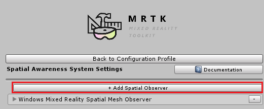
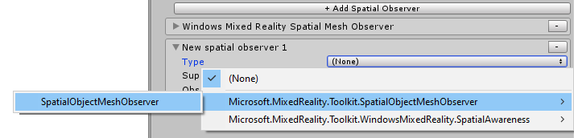
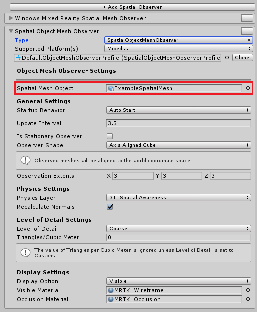

为编辑器配置 mesh observers
在Unity编辑器中提供环境网格数据的一个方便方法是使用SpatialObjectMeshObserver类。Spatial Object Mesh Observer是一个编辑器专用的 data provider，用于空间感知系统，它允许导入3D模型数据来表示空间网格。Spatial Object Mesh Observer 的一个常见用途是导入通过Microsoft HoloLens扫描的数据，以在Unity中测试一种体验如何适应不同的环境。
开始
本指南将介绍如何设置一个Spatial Object Mesh Observer。启用此功能有三个关键步骤。
- 在 Spatial Awareness system profile添加一个 Spatial Object Mesh Observer
- 设置 Environment Mesh Data object
- 配置其余的 Mesh Observer 配置文件属性
设置一个 spatial object mesh observer 配置文件
选择所需的Mixed Reality Toolkit 配置文件或选择场景中的Mixed Reality Toolkit对象
打开或展开 Spatial Awareness System 选项卡
点击 "Add Spatial Observer" 按钮

选择 SpatialObjectMeshObserver 类型

选择所需的 Spatial Mesh Object. 默认情况下，观察者配置了一个示例模型。这个模型是使用Microsoft HoloLens创建的，但是可以创建一个新的扫描网格对象.
-

Spatial object mesh observer 配置文件注释
由于Spatial Object Mesh Observer 从3D模型加载数据，它不遵守下面列出的一些标准mesh observer 设置。
Update Interval
Spatial Object Mesh Observer在模型加载时将所有网格发送到应用程序。它不模拟更新之间的时间增量。应用程序可以重新接受网格事件通过调用myObserver.ClearObservation() 和 myObserver.Resume()。
Is Stationary Observer
Spatial Object Mesh Observer认为所有的三维网格对象都是静止的，不考虑原点。
Observer Shape and Extents
Spatial Object Mesh Observer整个3D网格发送给应用程序。不考虑Observer shape和extents。
Level of Detail and Triangles / Cubic Meter
Observer在向应用程序发送网格时不尝试寻找3D模型 LODs。
获取环境扫描
本节概述了创建和收集Spatial Mesh Object 文件以与Spatial Object Mesh Observer一起使用的附加信息。
Windows 设备门户
Windows 设备门户从下载从Microsoft HoloLens设备得到的空间网格(.obj文件)。
- 佩戴HoloLens进行简单的步行和查看所需的环境来扫描
- 使用Windows设备门户连接到HoloLens
- 导航到 3D View 页面
- 单击 Spatial Mapping 部分下的Update 按钮
- 点击Spatial Mapping下的Save按钮，将obj文件保存到PC上
Note
HoloToolkit .room 文件
许多开发人员以前都使用过全息工具包来扫描环境并创建.room文件。混合现实工具包现在支持导入这些文件作为Unity中的游戏对象，并在Observer中作为Spatial Mesh Objects使用它们。